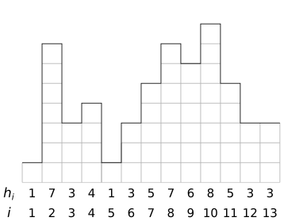
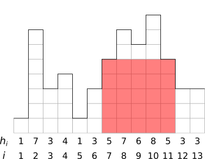

Introduction: This is your first “programming challenge” assignment. There will be three of these throughout the semester, putting what you learn about algorithms into practice — solving real problems is the whole point, after all! Your solutions will be submitted to an automated judging system that will test it against a range of test inputs (information on how to access this system is given in Canvas). You will get fast feedback on whether your program passed all the tests; however, if it fails a test you’ll only get an indication that it failed, and you won’t get to see the input or any other details. Your job is to think through the problem and make sure your program works on all possible inputs! In general you will be given two challenges — one will be a thinly disguised version of an algorithm that is given in the book, and for the other you’ll have to be more creative. One final rule: These are challenges for you to solve on your own – don’t discuss with others, and I won’t answer any questions about your algorithm or program. I will help you understand the problem if anything is unclear, but you must write, test, and debug your solution entirely on your own!
Challenge Specifics: The theme for this challenge is superheros and villains. The input to the program is a city skyline, with the heights of buildings (in floors or stories) along the skyline given in a sequence of values \(\langle h_1, h_2, \ldots, h_n\rangle\). Here is an example skyline:

As program input, this would be given as a sequence of values \(\langle 1,7,3,4,1,3,5,7,6,8,5,3,3\rangle\). To provide this input to your program, it is given in the following format: on the first line is the number \(n\), and then the \(n\) lines following that each have the values \(h_1\), \(h_2\), and so on. So for the example above, the input will given like this:
13
1
7
3
4
1
3
5
7
6
8
5
3
3Input should be read from standard input, although I recommend that you save inputs to files and redirect into your program for testing. Some students prefer to use file I/O in the program while they are developing the program (especially since most IDEs have poor support for providing input through standard input), but if you do this make sure you switch the input source back to standard input before submitting — the judging system will only provide input via standard input!
Your first task is to write a program for our superhero… ummm…… ArachnidMan. Yeah, that’s it. (Similarity to any copyrighted superhero purely coincidental.) ArachnidMan charges up his superpowers from gravity, and gets the biggest boost by falling as far as possible (called the “maximum fall distance”). He is traveling from left to right in our skyline, and can start from any position and jump to any position to the right. There’s no limit on how far he can jump horizontally. Your task is to find the best position to jump from and to jump to in order to maximize his power gain (in other words, maximize the distance he falls). In the skyline above, his best solution is to jump from position 2 (height 7) to position 5 (height 1), falling 6 stories.
To solve this problem, your program should find the best jumping-off position, and the position to jump to. One obvious solution is to try all possible pairs of \(i\) and \(j\) with \(1\leq i<j \leq n\) and calculate the distance fallen for each possibility. Since there are \(\Theta(n^2)\) possible \(i\) and \(j\) values, which gives you a \(\Theta(n^2)\) time solution. The challenge here is to do better than \(\Theta(n^2)\), where \(O(n\lg n)\) time is possible using the techniques we are discussing in class.
Your goal is to program this so that it takes less than \(5\) seconds to process its input and find the maximum fall distance. A reasonably fast processor (like those on our judging system) can easily run the \(\Theta(n^2)\) time algorithm in less than \(5\) seconds on inputs of \(10,000\) of fewer values. However, much larger than this and the \(\Theta(n^2)\) algorithm won’t be good enough.
Fortunately, there is a divide-and-conquer algorithm that will find the maximum fall distance in time \(O(n\lg n)\), allowing you to solve problems up to around \(n=500,000\) in less than 5 seconds. [Hint: this algorithms is basically the same as an algorithm given in Chapter 4 of the textbook. Once you see the connection, it’s just a matter of turning the book’s pseudocode into real code and making some minor adjustments.]
The first two challenge solutions that you should submit to on the judging system (if you implement the more efficient algorithm, then you can use the same solution for both of these problems):
Problem 1 (MaxFallSmall): [5 points] Your program should read the input data, then compute and print the maximum possible fall distance for this input. The output of your program should consist of just this distance, printed on a line by itself. In this, the “small” version of the problem, all inputs will have \(n\leq 10,000\) and so the \(\Theta(n^2)\) time algorithm should be able to solve the problem.
Problem 2 (MaxFallLarge): [10 points] This is the same as Problem 1, but inputs can get as large as \(n=500,000\) and so the \(\Theta(n^2)\) algorithm will not be able to pass these tests within the required time bound (under 5 seconds).
Because of your great success in helping ArachnidMan, some of the city’s supervillains would like to hire you to solve some of their problems too. A villain named Clandestine has asked you to help locate a hidden lair. Clandestine can’t hire an architect, so the lair must be a simple rectangle, and the goal is to hide it entirely behind the skyline so it can’t be seen (obviously, you can only look at the city from one direction). Your goal is to write a program to determine what the largest possible lair is. For the skyline above, this is illustrated below, where the largest lair is shown in light red.

This lair is 5 by 5, for an area of 25, which is the largest possible rectangular lair that can be hidden behind the skyline. You should write a program that finds the area of the largest lair, given data that describes the skyline as described above. For this example, your program should output 25 on a line by itself.
Problem 3 (MaxLairSmall): [5 points] A solution for this problem should calculate and print the correct answer within 5 seconds, where inputs are “small,” with \(n\leq 10,000\).
Problem 4 (MaxLairLarge): [10 points] This is the same problem, but inputs can get as large as \(n=500,000\) and so the \(\Theta(n^2)\) algorithm will not be able to pass these tests within the required time bound (under 5 seconds). There is an \(O(n\lg n)\) time divide-and-conquer algorithm for this problem, but it’s not in the book so you’ll have to be clever and figure it out!